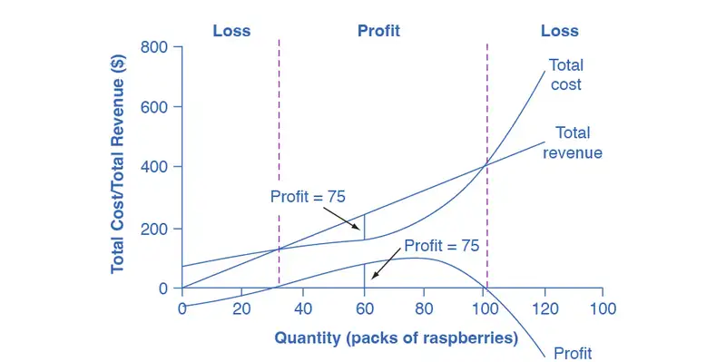
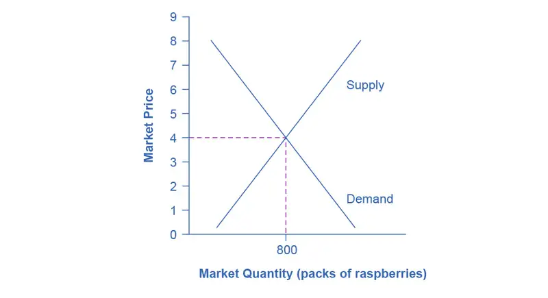
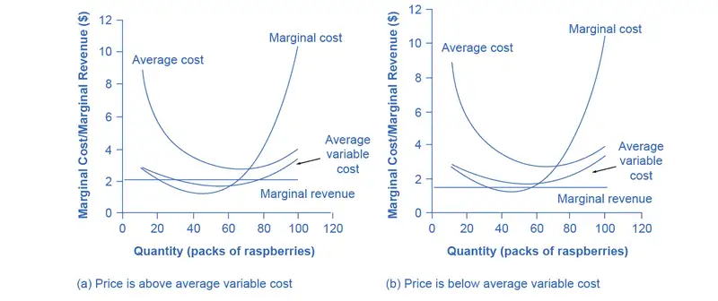
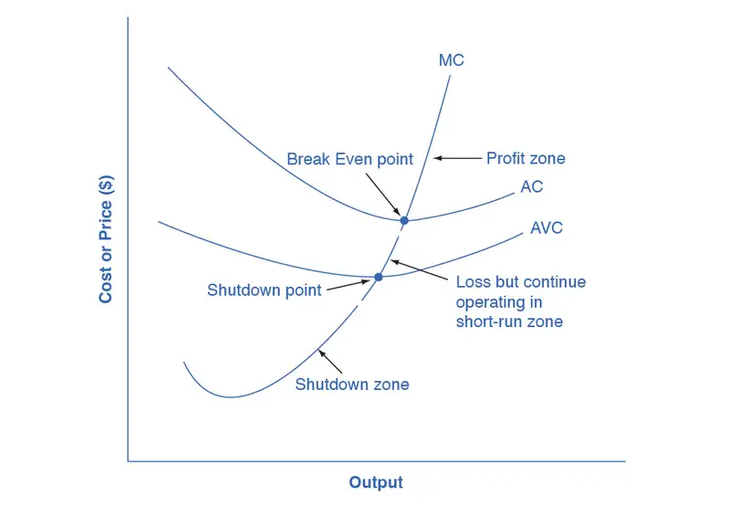
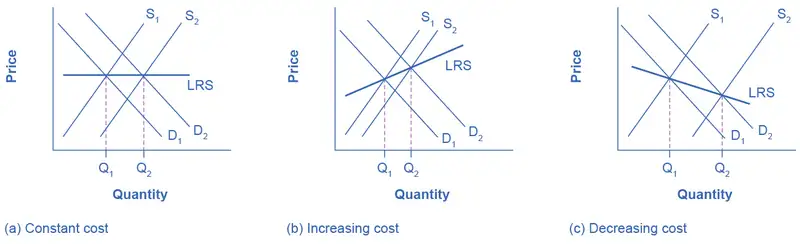

Chapter 8: Perfect Competition¶
Introduction¶
Bring It Home: A Dime a Dozen
When you were younger did you babysit, deliver papers, or mow the lawn for money? If so, you faced stiff competition from many other competitors who offered identical services. There was nothing to stop others from also offering their services.
All of you charged the “going rate.” If you tried to charge more, your customers would simply buy from someone else. These conditions are very similar to the conditions agricultural growers face.
Growing a crop may be more difficult to start than a babysitting or lawn mowing service, but growers face the same fierce competition. In the grand scale of world agriculture, farmers face competition from thousands of others because they sell an identical product. After all, winter wheat is winter wheat, but if they find it hard to make money with that crop, it is relatively easy for farmers to leave the marketplace for another crop. In this case, they do not sell the family farm, they switch crops.
Take the case of the upper Midwest region of the United States—for many generations the area was called “King Wheat.” According to the United States Department of Agriculture National Agricultural Statistics Service, statistics by state, in 1997, 11.6 million acres of wheat and 780,000 acres of corn were planted in North Dakota. In the intervening 25 or so years has the mix of crops changed? Since it is relatively easy to switch crops, did farmers change what they planted in response to changes in relative crop prices? We will find out at chapter’s end.
In the meantime, let's consider the topic of this chapter—the perfectly competitive market. This is a market in which entry and exit are relatively easy and competitors are “a dime a dozen.”
Chapter Outline: Introduction to Perfect Competition
In this chapter, you will learn about:
- Perfect Competition and Why It Matters
- How Perfectly Competitive Firms Make Output Decisions
- Entry and Exit Decisions in the Long Run
- Efficiency in Perfectly Competitive Markets
Most businesses face two realities: no one is required to buy their products, and even customers who might want those products may buy from other businesses instead. Firms that operate in perfectly competitive markets face this reality. In this chapter, you will learn how such firms make decisions about how much to produce, how much profit they make, whether to stay in business or not, and many others. Industries differ from one another in terms of how many sellers there are in a specific market, how easy or difficult it is for a new firm to enter, and the type of products that they sell. Economists refer to this as an industry's market structure. In this chapter, we focus on perfect competition. However, in other chapters we will examine other industry types: Monopoly and Monopolistic Competition and Oligopoly.
8.1 Perfect Competition and Why It Matters¶
Learning Objectives
By the end of this section, you will be able to:
- Explain the characteristics of a perfectly competitive market
- Discuss how perfectly competitive firms react in the short run and in the long run
Firms are in perfect competition when the following conditions occur: (1) many firms produce identical products; (2) many buyers are available to buy the product, and many sellers are available to sell the product; (3) sellers and buyers have all relevant information to make rational decisions about the product that they are buying and selling; and (4) firms can enter and leave the market without any restrictions—in other words, there is free entry and exit into and out of the market.
A perfectly competitive firm is known as a price taker, because the pressure of competing firms forces it to accept the prevailing equilibrium price in the market. If a firm in a perfectly competitive market raises the price of its product by so much as a penny, it will lose all of its sales to competitors. When a wheat grower, as we discussed in the Bring It Home feature, wants to know the going price of wheat, they have to check on the computer or listen to the radio. Supply and demand in the entire market solely determine the market price, not the individual farmer. A perfectly competitive firm must be a very small player in the overall market, so that it can increase or decrease output without noticeably affecting the overall quantity supplied and price in the market.
A perfectly competitive market is a hypothetical extreme; however, producers in a number of industries do face many competitor firms selling highly similar goods, in which case they must often act as price takers. Economists often use agricultural markets as an example. The same crops that different farmers grow are largely interchangeable. According to the United States Department of Agriculture monthly reports, in December 2021, U.S. corn farmers received an average of $5.47 per bushel. A corn farmer who attempted to sell at $6.00 per bushel would not have found any buyers. A perfectly competitive firm will not sell below the equilibrium price either. Why should they when they can sell all they want at the higher price? Other examples of agricultural markets that operate in close to perfectly competitive markets are small roadside produce markets and small organic farmers.
Link It Up
Visit this website that reveals the current value of various commodities.
This chapter examines how profit-seeking firms decide how much to produce in perfectly competitive markets. Such firms will analyze their costs as we discussed in the chapter on Production, Costs and Industry Structure. In the short run, the perfectly competitive firm will seek the quantity of output where profits are highest or, if profits are not possible, where losses are lowest.
In the long run, positive economic profits will attract competition as other firms enter the market. Economic losses will cause firms to exit the market. Ultimately, perfectly competitive markets will attain long-run equilibrium when no new firms want to enter the market and existing firms do not want to leave the market, as economic profits have been driven down to zero.
8.2 How Perfectly Competitive Firms Make Output Decisions¶
Learning Objectives
By the end of this section, you will be able to:
- Calculate profits by comparing total revenue and total cost
- Identify profits and losses with the average cost curve
- Explain the shutdown point
- Determine the price at which a firm should continue producing in the short run
A perfectly competitive firm has only one major decision to make—namely, what quantity to produce. To understand this, consider a different way of writing out the basic definition of profit:
Since a perfectly competitive firm must accept the price for its output as determined by the product’s market demand and supply, it cannot choose the price it charges. This is already determined in the profit equation, and so the perfectly competitive firm can sell any number of units at exactly the same price. It implies that the firm faces a perfectly elastic demand curve for its product: buyers are willing to buy any number of units of output from the firm at the market price. When the perfectly competitive firm chooses what quantity to produce, then this quantity—along with the prices prevailing in the market for output and inputs—will determine the firm’s total revenue, total costs, and ultimately, level of profits.
Determining the Highest Profit by Comparing Total Revenue and Total Cost¶
A perfectly competitive firm can sell as large a quantity as it wishes, as long as it accepts the prevailing market price. The formula above shows that total revenue depends on the quantity sold and the price charged. If the firm sells a higher quantity of output, then total revenue will increase. If the market price of the product increases, then total revenue also increases whatever the quantity of output sold. As an example of how a perfectly competitive firm decides what quantity to produce, consider the case of a small farmer who produces raspberries and sells them frozen for $4 per pack. Sales of one pack of raspberries will bring in $4, two packs will be $8, three packs will be $12, and so on. If, for example, the price of frozen raspberries doubles to $8 per pack, then sales of one pack of raspberries will be $8, two packs will be $16, three packs will be $24, and so on.
Table 8.1 shows total revenue and total costs for the raspberry farm; these data also appear in Figure 8.2. The horizontal axis shows the quantity of frozen raspberries produced in packs. The vertical axis shows both total revenue and total costs, measured in dollars. The total cost curve intersects with the vertical axis at a value that shows the level of fixed costs, and then slopes upward. All these cost curves follow the same characteristics as the curves that we covered in the Production, Costs and Industry Structure chapter.

Table 8.1 Total Cost and Total Revenue at the Raspberry Farm
| Quantity (Q) |
Total Cost (TC) |
Total Revenue (TR) |
Profit |
|---|---|---|---|
| 0 | $62 | $0 | −$62 |
| 10 | $90 | $40 | −$50 |
| 20 | $110 | $80 | −$30 |
| 30 | $126 | $120 | −$6 |
| 40 | $138 | $160 | $22 |
| 50 | $150 | $200 | $50 |
| 60 | $165 | $240 | $75 |
| 70 | $190 | $280 | $90 |
| 80 | $230 | $320 | $90 |
| 90 | $296 | $360 | $64 |
| 100 | $400 | $400 | $0 |
| 110 | $550 | $440 | $−110 |
| 120 | $715 | $480 | $−235 |
Based on its total revenue and total cost curves, a perfectly competitive firm like the raspberry farm can calculate the quantity of output that will provide the highest level of profit. At any given quantity, total revenue minus total cost will equal profit. One way to determine the most profitable quantity to produce is to see at what quantity total revenue exceeds total cost by the largest amount. Figure 8.2 shows total revenue, total cost and profit using the data from Table 8.1. The vertical gap between total revenue and total cost is profit, for example, at Q = 60, TR = 240 and TC = 165. The difference is 75, which is the height of the profit curve at that output level. The firm doesn’t make a profit at every level of output. In this example, total costs will exceed total revenues at output levels from 0 to approximately 30, and so over this range of output, the firm will be making losses. At output levels from 40 to 100, total revenues exceed total costs, so the firm is earning profits. However, at any output greater than 100, total costs again exceed total revenues and the firm is making increasing losses. Total profits appear in the final column of Table 8.1. Maximum profit occurs at an output between 70 and 80, when profit equals $90.
A higher price would mean that total revenue would be higher for every quantity sold. A lower price would mean that total revenue would be lower for every quantity sold. What happens if the price drops low enough so that the total revenue line is completely below the total cost curve; that is, at every level of output, total costs are higher than total revenues? In this instance, the best the firm can do is to suffer losses. However, a profit-maximizing firm will prefer the quantity of output where total revenues come closest to total costs and thus where the losses are smallest.
(Later we will see that sometimes it will make sense for the firm to close, rather than stay in operation producing output.)
Comparing Marginal Revenue and Marginal Costs¶
The approach that we described in the previous section, using total revenue and total cost, is not the only approach to determining the profit maximizing level of output. In this section, we provide an alternative approach which uses marginal revenue and marginal cost.
Firms often do not have the necessary data they need to draw a complete total cost curve for all levels of production. They cannot be sure of what total costs would look like if they, say, doubled production or cut production in half, because they have not tried it. Instead, firms experiment. They produce a slightly greater or lower quantity and observe how it affects profits. In economic terms, this practical approach to maximizing profits means examining how changes in production affect marginal revenue and marginal cost.
Figure 8.3 presents the marginal revenue and marginal cost curves based on the total revenue and total cost in Table 8.1. The marginal revenue curve shows the additional revenue gained from selling one more unit. As mentioned before, a firm in perfect competition faces a perfectly elastic demand curve for its product—that is, the firm’s demand curve is a horizontal line drawn at the market price level. This also means that the firm’s marginal revenue curve is the same as the firm’s demand curve: Every time a consumer demands one more unit, the firm sells one more unit and revenue increases by exactly the same amount equal to the market price. In this example, every time the firm sells a pack of frozen raspberries, the firm’s revenue increases by $4. Table 8.2 shows an example of this. This condition only holds for price taking firms in perfect competition where:
The formula for marginal revenue is:
Table 8.2
| Price | Quantity | Total Revenue | Marginal Revenue |
|---|---|---|---|
| $4 | 1 | $4 | - |
| $4 | 2 | $8 | $4 |
| $4 | 3 | $12 | $4 |
| $4 | 4 | $16 | $4 |
Notice that marginal revenue does not change as the firm produces more output. That is because under perfect competition, the price is determined through the interaction of supply and demand in the market and does not change as the farmer produces more (keeping in mind that, due to the relative small size of each firm, increasing their supply has no impact on the total market supply where price is determined).
Since a perfectly competitive firm is a price taker, it can sell whatever quantity it wishes at the market-determined price. We calculate marginal cost, the cost per additional unit sold, by dividing the change in total cost by the change in quantity. The formula for marginal cost is:
Ordinarily, marginal cost changes as the firm produces a greater quantity.
In the raspberry farm example, in Figure 8.3 and Table 8.3, marginal cost at first declines as production increases from 10 to 20 to 30 to 40 packs of raspberries—which represents the area of increasing marginal returns that is not uncommon at low levels of production. At some point, though, marginal costs start to increase, displaying the typical pattern of diminishing marginal returns. If the firm is producing at a quantity where MR > MC, like 40 or 50 packs of raspberries, then it can increase profit by increasing output because the marginal revenue is exceeding the marginal cost. If the firm is producing at a quantity where MC > MR, like 90 or 100 packs, then it can increase profit by reducing output because the reductions in marginal cost will exceed the reductions in marginal revenue. The firm’s profit-maximizing choice of output will occur where MR = MC (or at a choice close to that point).
![This graph illustrates marginal revenue and marginal cost curves of an individual farmer in a perfectly competitive market. The y-axis shows marginal cost and marginal revenue measured in dollars. The x-axis shows quantity as packs of raspberries. The marginal revenue curve is shown as a straight horizontal line at 5 dollars because in a perfectly competitive market price is determined by the market, and that price is marginal revenue. The marginal cost curve starts just below marginal revenue, decreases, then begins to increase after quantity of 50. As marginal cost is increasing, it intersects marginal revenue at a quantity of 80, and this is identified as the profit-maximizing point.](img/cnx-econ3e-c08-002.webp)

Table 8.3 Marginal Revenues and Marginal Costs at the Raspberry Farm
| Quantity | Total Cost | Marginal Cost | Total Revenue | Marginal Revenue | Profit |
|---|---|---|---|---|---|
| 0 | $62 | - | $0 | $4 | -$62 |
| 10 | $90 | $2.80 | $40 | $4 | -$50 |
| 20 | $110 | $2.00 | $80 | $4 | -$30 |
| 30 | $126 | $1.60 | $120 | $4 | -$6 |
| 40 | $138 | $1.20 | $160 | $4 | $22 |
| 50 | $150 | $1.20 | $200 | $4 | $50 |
| 60 | $165 | $1.50 | $240 | $4 | $75 |
| 70 | $190 | $2.50 | $280 | $4 | $90 |
| 80 | $230 | $4.00 | $320 | $4 | $90 |
| 90 | $296 | $6.60 | $360 | $4 | $64 |
| 100 | $400 | $10.40 | $400 | $4 | $0 |
| 110 | $550 | $15.00 | $440 | $4 | -$110 |
| 120 | $715 | $16.50 | $480 | $4 | -$235 |
In this example, the marginal revenue and marginal cost curves cross at a price of $4 and a quantity of 80 produced. If the farmer started out producing at a level of 60, and then experimented with increasing production to 70, marginal revenues from the increase in production would exceed marginal costs—and so profits would rise. The farmer has an incentive to keep producing. At a level of output of 80, marginal cost and marginal revenue are equal so profit doesn’t change. If the farmer then experimented further with increasing production from 80 to 90, he would find that marginal costs from the increase in production are greater than marginal revenues, and so profits would decline.
The profit-maximizing choice for a perfectly competitive firm will occur at the level of output where marginal revenue is equal to marginal cost—that is, where MR = MC. This occurs at Q = 80 in the figure.
Work It Out: Does Profit Maximization Occur at a Range of Output or a Specific Level of Output?
Table 8.1 shows that maximum profit occurs at any output level between 70 and 80 units of output. But MR = MC occurs only at 80 units of output. How can we explain this slight discrepancy? As long as MR > MC, a profit-seeking firm should keep expanding production. Expanding production into the zone where MR < MC reduces economic profits. It’s true that profit is the same at Q = 70 and Q = 80, but it’s only when the firm goes beyond that Q that it will see that profits fall. Thus, MR = MC is the signal to stop expanding, so that is the level of output they should target.
Because the marginal revenue received by a perfectly competitive firm is equal to the price P, we can also write the profit-maximizing rule for a perfectly competitive firm as a recommendation to produce at the quantity of output where P = MC.
Profits and Losses with the Average Cost Curve¶
Does maximizing profit (producing where MR = MC) imply an actual economic profit? The answer depends on the relationship between price and average total cost, which is the average profit or profit margin. If the market price is higher than the firm's average cost of production for that quantity produced, then the profit margin is positive and the firm will earn profits. Conversely, if the market price is lower than the average cost of production, the profit margin is negative and the firm will suffer losses. You might think that, in this situation, the firm may want to shut down immediately. Remember, however, that the firm has already paid for fixed costs, such as equipment, so it may continue to produce for a while and incur a loss. Table 8.3 continues the raspberry farm example. Figure 8.5 illustrates the three possible scenarios: (a) where price intersects marginal cost at a level above the average cost curve, (b) where price intersects marginal cost at a level equal to the average cost curve, and (c) where price intersects marginal cost at a level below the average cost curve.
![Three graphs are illustrated. The first one (a) shows u-shaped average cost combined with a marginal cost curve that first decreases, then increases and intersects average cost at the minimum average cost. A horizontal line shows the market price of raspberries at 5 dollars. This is also marginal revenue, and it is shown intersecting the marginal cost curve at a quantity of 85 packs of raspberries, which is the profit-maximizing amount of output. This intersection is labeled E, and a vertical line is drawn down from it to the quantity axis. This vertical line intersects the average cost curve at a point labeled C. A blue-shaded rectangle is created showing positive profits at this price of raspberries. The next graph (b) shows the break-even point. Average cost and marginal cost are drawn the same, but the market price is now 3 dollars, which is also marginal revenue. This marginal revenue line intersects marginal cost at minimum average cost, at a point labeled E, and the profit-maximizing quantity of raspberries is shown as 70 packs. Because marginal revenue and average cost are equal, there is no profit or loss. The last graph (c) shows loss. Average cost and marginal cost are drawn the same, but the market price is now 2 dollars, which is also marginal revenue. This marginal revenue line intersects marginal cost at point labeled E which is below average cost. A vertical line is drawn up from this point to average cost, and that intersection is labeled C. The vertical distance E to C represents the per unit loss of producing this amount of raspberries, 65 packs. A red-shaded rectangle is created showing the loss.](img/cnx-econ3e-c08-014.webp)
First consider a situation where the price is equal to $5 for a pack of frozen raspberries. The rule for a profit-maximizing perfectly competitive firm is to produce the level of output where Price= MR = MC, so the raspberry farmer will produce a quantity of approximately 85, which is labeled as E' in Figure 8.5 (a). Remember that the area of a rectangle is equal to its base multiplied by its height. The farm’s total revenue at this price will be shown by the rectangle from the origin over to a quantity of 85 packs (the base) up to point E' (the height), over to the price of $5, and back to the origin. The average cost of producing 85 packs is shown by point C or about $3.09. Total costs will be the quantity of 85 times the average cost of $3.09, which is shown by the area of the rectangle from the origin to a quantity of 85, up to point C, over to the vertical axis and down to the origin. The difference between total revenues and total costs is profits. Thus, profits will be the blue shaded rectangle on top.
We calculate this as:
Or, we can calculate it as:
Now consider Figure 8.5 (b), where the price has fallen to $2.80 for a pack of frozen raspberries. Again, the perfectly competitive firm will choose the level of output where Price = MR = MC, but in this case, the quantity produced will be 75. At this price and output level, where the marginal cost curve is crossing the average cost curve, the price the firm receives is exactly equal to its average cost of production. We call this the break even point.
The farm’s total revenue at this price can be shown by the rectangle from the origin over to a quantity of 75 packs (the base) up to point E (the height), over to the price of $2.80, and back to the origin. The height of the average cost curve at Q = 75, i.e. point E, shows the average cost of producing this quantity. Total costs will be the quantity of 75 times the average cost of $2.80, which is shown by the area of the rectangle from the origin to a quantity of 75, up to point E, over to the vertical axis and down to the origin. It should be clear that the rectangles for total revenue and total cost are the same. (This is also why these two rectangles are not shaded in Figure 8.5 (b).) Thus, the firm is making zero profit. The calculations are as follows:
Or, we can calculate it as:
In Figure 8.5 (c), the market price has fallen still further to $2.00 for a pack of frozen raspberries. At this price, marginal revenue intersects marginal cost at a quantity of 65. The farm’s total revenue at this price will be shown by the large shaded rectangle from the origin over to a quantity of 65 packs (the base) up to point E” (the height), over to the price of $2, and back to the origin. The average cost of producing 65 packs is shown by Point C” or shows the average cost of producing 50 packs is about $2.73. Total costs will be the quantity of 65 times the average cost of $2.73, which the area of the rectangle from the origin to a quantity of 50, up to point C”, over to the vertical axis and down to the origin shows. It should be clear from examining the two rectangles that total revenue is less than total cost. Thus, the firm is losing money and the loss (or negative profit) will be the rose-shaded rectangle.
The calculations are:
Or:
If the market price that perfectly competitive firm receives leads it to produce at a quantity where the price is greater than average cost, the firm will earn profits. If the price the firm receives causes it to produce at a quantity where price equals average cost, which occurs at the minimum point of the AC curve, then the firm earns zero profits. Finally, if the price the firm receives leads it to produce at a quantity where the price is less than average cost, the firm will earn losses. Table 8.4 summarizes this.
Table 8.4
| If... | Then... |
|---|---|
| Price > ATC | Firm earns an economic profit |
| Price = ATC | Firm earns zero economic profit |
| Price < ATC | Firm earns a loss |
Clear It Up: Which intersection should a firm choose?
At a price of $2, MR intersects MC at two points: Q = 20 and Q = 65. It never makes sense for a firm to choose a level of output on the downward sloping part of the MC curve, because the profit is lower (the loss is bigger). Thus, the correct choice of output is Q = 65.
The Shutdown Point¶
The possibility that a firm may earn losses raises a question: Why can the firm not avoid losses by shutting down and not producing at all? The answer is that shutting down can reduce variable costs to zero, but in the short run, the firm has already paid for fixed costs. As a result, if the firm produces a quantity of zero, it would still make losses because it would still need to pay for its fixed costs. Therefore when a firm is experiencing losses, it must face a question: should it continue producing or should it shut down?
As an example, consider the situation of the Yoga Center, which has signed a contract to rent space that costs $10,000 per month. If the firm decides to operate, its marginal costs for hiring yoga teachers is $15,000 for the month. If the firm shuts down, it must still pay the rent, but it would not need to hire labor. Table 8.5 shows three possible scenarios. In the first scenario, the Yoga Center does not have any clients, and therefore does not make any revenues, in which case it faces losses of $10,000 equal to the fixed costs. In the second scenario, the Yoga Center has clients that earn the center revenues of $10,000 for the month, but ultimately experiences losses of $15,000 due to having to hire yoga instructors to cover the classes. In the third scenario, the Yoga Center earns revenues of $20,000 for the month, but experiences losses of $5,000.
In all three cases, the Yoga Center loses money. In all three cases, when the rental contract expires in the long run, assuming revenues do not improve, the firm should exit this business. In the short run, though, the decision varies depending on the level of losses and whether the firm can cover its variable costs. In scenario 1, the center does not have any revenues, so hiring yoga teachers would increase variable costs and losses, so it should shut down and only incur its fixed costs. In scenario 2, the center’s losses are greater because it does not make enough revenue to offset the increased variable costs, so it should shut down immediately and only incur its fixed costs. If price is below the minimum average variable cost, the firm must shut down. In contrast, in scenario 3 the revenue that the center can earn is high enough that the losses diminish when it remains open, so the center should remain open in the short run.
Table 8.5 Should the Yoga Center Shut Down Now or Later?
| Scenario 1 |
| If the center shuts down now, revenues are zero but it will not incur any variable costs and would only need to pay fixed costs of $10,000. |
| \(\displaystyle \begin{array}{l} \text{profit = total revenue–(fixed costs + variable cost)} \\ \ \text{= 0 –\$10,000} \\ \ \text{= –\$10,000} \end{array}\) |
| Scenario 2 |
| The center earns revenues of $10,000, and variable costs are $15,000. The center should shut down now. |
| \(\displaystyle \begin{array}{l} \text{profit = total revenue}\ -\ \text{(fixed costs + variable cost)} \\ \ \text{= \$10,000}\ -\ \text{(\$10,000 + \$15,000)} \\ \ \text{= –\$15,000} \end{array}\) |
| Scenario 3 |
| The center earns revenues of $20,000, and variable costs are $15,000. The center should continue in business. |
| \(\displaystyle \begin{array}{l} \text{profit = total revenue}\ -\ \text{(fixed costs + variable cost)} \\ \ \text{= \$20,000}\ -\ \text{(\$10,000 + \$15,000)} \\ \ \text{= –\$5,000} \end{array}\) |
Figure 8.6 illustrates the lesson that remaining open requires the price to exceed the firm’s average variable cost. When the firm is operating below the break-even point, where price equals average cost, it is operating at a loss so it faces two options: continue to produce and lose money or shutdown. Which option is preferable? The one that loses the least money is the best choice.
At a price of $2.00 per pack, as Figure 8.6 (a) illustrates, if the farm stays in operation it will produce at a level of 65 packs of raspberries, and it will make losses of $47.45 (as explained earlier). The alternative would be to shut down and lose all the fixed costs of $62.00. Since losing $47.45 is preferable to losing $62.00, the profit maximizing (or in this case the loss minimizing) choice is to stay in operation. The key reason is because price is above average variable cost. This means that at the current price the farm can pay all its variable costs, and have some revenue left over to pay some of the fixed costs. So the loss represents the part of the fixed costs the farm can’t pay, which is less than the entire fixed costs. However, if the price declined to $1.50 per pack, as Figure 8.6 (b) shows, and if the firm applied its rule of producing where P = MR = MC, it would produce a quantity of 60. This price is below average variable cost for this level of output. If the farmer cannot pay workers (the variable costs), then it has to shut down. At this price and output, total revenues would be $90 (quantity of 60 times price of $1.50) and total cost would be $165, for overall losses of $75. If the farm shuts down, it must pay only its fixed costs of $62, so shutting down is preferable to selling at a price of $1.50 per pack.

Looking at Table 8.6, if the price falls below about $1.72, the minimum average variable cost, the firm must shut down.
Table 8.6 Cost of Production for the Raspberry Farm
| Quantity Q |
Average Variable Cost AVC |
Average Cost AC |
Marginal Cost MC |
|---|---|---|---|
| 0 | - | - | - |
| 10 | $2.80 | $9.00 | $2.80 |
| 20 | $2.40 | $5.50 | $2.00 |
| 30 | $2.13 | $4.20 | $1.60 |
| 40 | $1.90 | $3.45 | $1.20 |
| 50 | $1.76 | $3.00 | $1.20 |
| 60 | $1.72 | $2.75 | $1.50 |
| 70 | $1.83 | $2.71 | $2.50 |
| 80 | $2.10 | $2.88 | $4.00 |
| 90 | $2.60 | $3.29 | $6.60 |
| 100 | $3.38 | $4.00 | $10.40 |
| 110 | $4.44 | $5.00 | $15.00 |
| 120 | $5.44 | $5.96 | $31.50 |
The intersection of the average variable cost curve and the marginal cost curve, which shows the price below which the firm would lack enough revenue to cover its variable costs, is called the shutdown point. If the perfectly competitive firm faces a market price above the shutdown point, then the firm is at least covering its average variable costs. At a price above the shutdown point, the firm is also making enough revenue to cover at least a portion of fixed costs, so it should limp ahead even if it is making losses in the short run, since at least those losses will be smaller than if the firm shuts down immediately and incurs a loss equal to total fixed costs. However, if the firm is receiving a price below the price at the shutdown point, then the firm is not even covering its variable costs. In this case, staying open is making the firm’s losses larger, and it should shut down immediately. To summarize, if:
- price < minimum average variable cost, then firm shuts down
- price > minimum average variable cost, then firm stays in business
Short-Run Outcomes for Perfectly Competitive Firms¶
The average cost and average variable cost curves divide the marginal cost curve into three segments, as Figure 8.7 shows. At the market price, which the perfectly competitive firm accepts as given, the profit-maximizing firm chooses the output level where price or marginal revenue, which are the same thing for a perfectly competitive firm, is equal to marginal cost: P = MR = MC.

First consider the upper zone, where prices are above the level where marginal cost (MC) crosses average cost (AC) at the zero profit point. At any price above that level, the firm will earn profits in the short run. If the price falls exactly on the break even point where the MC and AC curves cross, then the firm earns zero profits. If a price falls into the zone between the break even point, where MC crosses AC, and the shutdown point, where MC crosses AVC, the firm will be making losses in the short run—but since the firm is more than covering its variable costs, the losses are smaller than if the firm shut down immediately. Finally, consider a price at or below the shutdown point where MC crosses AVC. At any price like this one, the firm will shut down immediately, because it cannot even cover its variable costs.
Marginal Cost and the Firm’s Supply Curve¶
For a perfectly competitive firm, the marginal cost curve is identical to the firm’s supply curve starting from the minimum point on the average variable cost curve. To understand why this perhaps surprising insight holds true, first think about what the supply curve means. A firm checks the market price and then looks at its supply curve to decide what quantity to produce. Now, think about what it means to say that a firm will maximize its profits by producing at the quantity where P = MC. This rule means that the firm checks the market price, and then looks at its marginal cost to determine the quantity to produce—and makes sure that the price is greater than the minimum average variable cost. In other words, the marginal cost curve above the minimum point on the average variable cost curve becomes the firm’s supply curve.
Link It Up
Watch this video that addresses how drought in the United States can impact food prices across the world.
As we discussed in the chapter on Demand and Supply, many of the reasons that supply curves shift relate to underlying changes in costs. For example, a lower price of key inputs or new technologies that reduce production costs cause supply to shift to the right. In contrast, bad weather or added government regulations can add to costs of certain goods in a way that causes supply to shift to the left. We can also interpret these shifts in the firm’s supply curve as shifts of the marginal cost curve. A shift in costs of production that increases marginal costs at all levels of output—and shifts MC upward and to the left—will cause a perfectly competitive firm to produce less at any given market price. Conversely, a shift in costs of production that decreases marginal costs at all levels of output will shift MC downward and to the right and as a result, a competitive firm will choose to expand its level of output at any given price. The following Work It Out feature will walk you through an example.
Work It Out: At What Price Should the Firm Continue Producing in the Short Run?
To determine the short-run economic condition of a firm in perfect competition, follow the steps outlined below. Use the data in Table 8.7.
Table 8.7
| Q | P | TFC | TVC | TC | AVC | ATC | MC | TR | Profits |
|---|---|---|---|---|---|---|---|---|---|
| 0 | $28 | $20 | $0 | - | - | - | - | - | - |
| 1 | $28 | $20 | $20 | - | - | - | - | - | - |
| 2 | $28 | $20 | $25 | - | - | - | - | - | - |
| 3 | $28 | $20 | $35 | - | - | - | - | - | - |
| 4 | $28 | $20 | $52 | - | - | - | - | - | - |
| 5 | $28 | $20 | $80 | - | - | - | - | - | - |
Step 1. Determine the cost structure for the firm. For a given total fixed costs and variable costs, calculate total cost, average variable cost, average total cost, and marginal cost. Follow the formulas given in the Production, Costs, and Industry Structure chapter. These calculations are in Table 8.8.
Table 8.8
| Q | P | TFC | TVC | TC (TFC+TVC) |
AVC (TVC/Q) |
ATC (TC/Q) |
MC (TC2−TC1)/ (Q2−Q1) |
|---|---|---|---|---|---|---|---|
| 0 | $28 | $20 | $0 | $20+$0=$20 | - | - | - |
| 1 | $28 | $20 | $20 | $20+$20=$40 | $20/1=$20.00 | $40/1=$40.00 | ($40−$20)/ (1−0)= $20 |
| 2 | $28 | $20 | $25 | $20+$25=$45 | $25/2=$12.50 | $45/2=$22.50 | ($45−$40)/ (2−1)= $5 |
| 3 | $28 | $20 | $35 | $20+$35=$55 | $35/3=$11.67 | $55/3=$18.33 | ($55−$45)/ (3−2)= $10 |
| 4 | $28 | $20 | $52 | $20+$52=$72 | $52/4=$13.00 | $72/4=$18.00 | ($72−$55)/ (4−3)= $17 |
| 5 | $28 | $20 | $80 | $20+$80=$100 | $80/5=$16.00 | $100/5=$20.00 | ($100−$72)/ (5−4)= $28 |
Step 2. Determine the market price that the firm receives for its product. Since the firm in perfect competition is a price taker, the market price is constant. With the given price, calculate total revenue as equal to price multiplied by quantity for all output levels produced. In this example, the given price is $28. You can see that in the second column of Table 8.9.
Table 8.9
| Quantity | Price | Total Revenue (P × Q) |
|---|---|---|
| 0 | $28 | $28×0=$0 |
| 1 | $28 | $28×1=$28 |
| 2 | $28 | $28×2=$56 |
| 3 | $28 | $28×3=$84 |
| 4 | $28 | $28×4=$112 |
| 5 | $28 | $28×5=$140 |
Step 3. Calculate profits as total cost subtracted from total revenue, as Table 8.10 shows.
Table 8.10
| Quantity | Total Revenue | Total Cost | Profits (TR−TC) |
|---|---|---|---|
| 0 | $0 | $20 | $0−$20=−$20 |
| 1 | $28 | $40 | $28−$40=−$12 |
| 2 | $56 | $45 | $56−$45=$11 |
| 3 | $84 | $55 | $84−$55=$29 |
| 4 | $112 | $72 | $112−$72=$40 |
| 5 | $140 | $100 | $140−$100=$40 |
Step 4. To find the profit-maximizing output level, look at the Marginal Cost column (at every output level produced), as Table 8.11 shows, and determine where it is equal to the market price. The output level where price equals the marginal cost is the output level that maximizes profits.
Table 8.11
| Q | P | TFC | TVC | TC | AVC | ATC | MC | TR | Profits |
|---|---|---|---|---|---|---|---|---|---|
| 0 | $28 | $20 | $0 | $20 | - | - | - | $0 | −$20 |
| 1 | $28 | $20 | $20 | $40 | $20.00 | $40.00 | $20 | $28 | −$12 |
| 2 | $28 | $20 | $25 | $45 | $12.50 | $22.50 | $5 | $56 | $11 |
| 3 | $28 | $20 | $35 | $55 | $11.67 | $18.33 | $10 | $84 | $29 |
| 4 | $28 | $20 | $52 | $72 | $13.00 | $18.00 | $17 | $112 | $40 |
| 5 | $28 | $20 | $80 | $100 | $16.00 | $20.00 | $28 | $140 | $40 |
Step 5. Once you have determined the profit-maximizing output level (in this case, output quantity 5), you can look at the amount of profits made (in this case, $40).
Step 6. If the firm is making economic losses, the firm needs to determine whether it produces the output level where price equals marginal revenue and equals marginal cost or it shuts down and only incurs its fixed costs.
Step 7. For the output level where marginal revenue is equal to marginal cost, check if the market price is greater than the average variable cost of producing that output level.
- If P > AVC but P < ATC, then the firm continues to produce in the short-run, making economic losses.
- If P < AVC, then the firm stops producing and only incurs its fixed costs.
In this example, the price of $28 is greater than the AVC ($16.40) of producing 5 units of output, so the firm continues producing.
8.3 Entry and Exit Decisions in the Long Run¶
Learning Objectives
By the end of this section, you will be able to:
- Explain how entry and exit lead to zero profits in the long run
- Discuss the long-run adjustment process
It is impossible to precisely define the line between the short run and the long run with a stopwatch, or even with a calendar. It varies according to the specific business. Therefore, the distinction between the short run and the long run is more technical: in the short run, firms cannot change the usage of fixed inputs, while in the long run, the firm can adjust all factors of production.
In a competitive market, profits are a red cape that incites businesses to charge. If a business is making a profit in the short run, it has an incentive to expand existing factories or to build new ones. New firms may start production, as well. When new firms enter the industry in response to increased industry profits it is called entry.
Losses are the black thundercloud that causes businesses to flee. If a business is making losses in the short run, it will either keep limping along or just shut down, depending on whether its revenues are covering its variable costs. But in the long run, firms that are facing losses will cease production altogether. The long-run process of reducing production in response to a sustained pattern of losses is called exit. The following Clear It Up feature discusses where some of these losses might come from, and the reasons why some firms go out of business.
Clear It Up: Why do firms cease to exist?
Can we say anything about what causes a firm to exit an industry? Profits are the measurement that determines whether a business stays operating or not. Individuals start businesses with the purpose of making profits. They invest their money, time, effort, and many other resources to produce and sell something that they hope will give them something in return. Unfortunately, not all businesses are successful, and many new startups soon realize that their “business venture” must eventually end.
In the model of perfectly competitive firms, those that consistently cannot make money will “exit,” which is a nice, bloodless word for a more painful process. When a business fails, after all, workers lose their jobs, investors lose their money, and owners and managers can lose their dreams. Many businesses fail. The U.S. Small Business Administration indicates that in 2011, 534,907 new firms "entered," and 575,691 firms failed.
Sometimes a business fails because of poor management or workers who are not very productive, or because of tough domestic or foreign competition. Businesses also fail from a variety of causes. For example, conditions of demand and supply in the market may shift in an unexpected way, so that the prices that a business charges for outputs fall or the prices for inputs rise. With millions of businesses in the U.S. economy, even a small fraction of them failing will affect many people—and business failures can be very hard on the workers and managers directly involved. However, from the standpoint of the overall economic system, business exits are sometimes a necessary evil if a market-oriented system is going to offer a flexible mechanism for satisfying customers, keeping costs low, and inventing new products.
How Entry and Exit Lead to Zero Profits in the Long Run¶
No perfectly competitive firm acting alone can affect the market price. However, the combination of many firms entering or exiting the market will affect overall supply in the market. In turn, a shift in supply for the market as a whole will affect the market price. Entry and exit to and from the market are the driving forces behind a process that, in the long run, pushes the price down to minimum average total costs so that all firms are earning a zero profit.
To understand how short-run profits for a perfectly competitive firm will evaporate in the long run, imagine the following situation. The market is in long-run equilibrium, where all firms earn zero economic profits producing the output level where P = MR = MC and P = AC. No firm has the incentive to enter or leave the market. Let’s say that the product’s demand increases, and with that, the market price goes up. The existing firms in the industry are now facing a higher price than before, so they will increase production to the new output level where P = MR = MC.
This will temporarily make the market price rise above the minimum point on the average cost curve, and therefore, the existing firms in the market will now be earning economic profits. However, these economic profits attract other firms to enter the market. Entry of many new firms causes the market supply curve to shift to the right. As the supply curve shifts to the right, the market price starts decreasing, and with that, economic profits fall for new and existing firms. As long as there are still profits in the market, entry will continue to shift supply to the right. This will stop whenever the market price is driven down to the zero-profit level, where no firm is earning economic profits.
Short-run losses will fade away by reversing this process. Say that the market is in long-run equilibrium. This time, instead, demand decreases, and with that, the market price starts falling. The existing firms in the industry are now facing a lower price than before, and as it will be below the average cost curve, they will now be making economic losses. Some firms will continue producing where the new P = MR = MC, as long as they are able to cover their average variable costs. Some firms will have to shut down immediately as they will not be able to cover their average variable costs, and will then only incur their fixed costs, minimizing their losses. Exit of many firms causes the market supply curve to shift to the left. As the supply curve shifts to the left, the market price starts rising, and economic losses start to be lower. This process ends whenever the market price rises to the zero-profit level, where the existing firms are no longer losing money and are at zero profits again. Thus, while a perfectly competitive firm can earn profits in the short run, in the long run the process of entry will push down prices until they reach the zero-profit level. Conversely, while a perfectly competitive firm may earn losses in the short run, firms will not continually lose money. In the long run, firms making losses are able to escape from their fixed costs, and their exit from the market will push the price back up to the zero-profit level. In the long run, this process of entry and exit will drive the price in perfectly competitive markets to the zero-profit point at the bottom of the AC curve, where marginal cost crosses average cost.
The Long-Run Adjustment and Industry Types¶
Whenever there are expansions in an industry, costs of production for the existing and new firms could either stay the same, increase, or even decrease. Therefore, we can categorize an industry as being (1) a constant-cost industry (as demand increases, the cost of production for firms stays the same), (2) an increasing-cost industry (as demand increases, the cost of production for firms increases), or (3) a decreasing-cost industry (as demand increases the costs of production for the firms decreases).
For a constant-cost industry, whenever there is an increase in market demand and price, then the supply curve shifts to the right with new firms’ entry and stops at the point where the new long-run equilibrium intersects at the same market price as before. This is the case of constant returns to scale, which we discussed earlier in the chapter on Production, Costs, and Industry Structure. However, why will costs remain the same? In this type of industry, the supply curve is very elastic. Firms can easily supply any quantity that consumers demand. In addition, there is a perfectly elastic supply of inputs—firms can easily increase their demand for employees, for example, with no increase to wages. Tying in to our Bring it Home discussion, an increased demand for ethanol in recent years has caused the demand for corn to increase. Consequently, many farmers switched from growing wheat to growing corn. Agricultural markets are generally good examples of constant-cost industries.
For an increasing-cost industry, as the market expands, the old and new firms experience increases in their costs of production, which makes the new zero-profit level intersect at a higher price than before. Here companies may have to deal with limited inputs, such as skilled labor. As the demand for these workers rises, wages rise and this increases the cost of production for all firms. The industry supply curve in this type of industry is more inelastic.
For a decreasing-cost industry, as the market expands, the old and new firms experience lower costs of production, which makes the new zero-profit level intersect at a lower price than before. In this case, the industry and all the firms in it are experiencing falling average total costs. This can be due to an improvement in technology in the entire industry or an increase in the education of employees. High-tech industries may be a good example of a decreasing-cost market.
Figure 8.8 (a) presents the case of an adjustment process in a constant-cost industry. Whenever there are output expansions in this type of industry, the long-run outcome implies more output produced at exactly the same original price. Note that supply was able to increase to meet the increased demand. When we join the before and after long-run equilibriums, the resulting line is the long run supply (LRS) curve in perfectly competitive markets. In this case, it is a flat curve. Figure 8.8 (b) and Figure 8.8 (c) present the cases for an increasing-cost and decreasing-cost industry, respectively. For an increasing-cost industry, the LRS is upward sloping, while for a decreasing-cost industry, the LRS is downward sloping.

8.4 Efficiency in Perfectly Competitive Markets¶
Learning Objectives
By the end of this section, you will be able to:
- Apply concepts of productive efficiency and allocative efficiency to perfectly competitive markets
- Compare the model of perfect competition to real-world markets
When profit-maximizing firms in perfectly competitive markets combine with utility-maximizing consumers, something remarkable happens: the resulting quantities of outputs of goods and services demonstrate both productive and allocative efficiency (terms that we first introduced in Choice in a World of Scarcity).
Productive efficiency means producing without waste, so that the choice is on the production possibility frontier. In the long run in a perfectly competitive market, because of the process of entry and exit, the price in the market is equal to the minimum of the long-run average cost curve. In other words, firms produce and sell goods at the lowest possible average cost.
Allocative efficiency means that among the points on the production possibility frontier, the chosen point is socially preferred—at least in a particular and specific sense. In a perfectly competitive market, price will be equal to the marginal cost of production. Think about the price that one pays for a good as a measure of the social benefit one receives for that good; after all, willingness to pay conveys what the good is worth to a buyer. Then think about the marginal cost of producing the good as representing not just the cost for the firm, but more broadly as the social cost of producing that good. When perfectly competitive firms follow the rule that profits are maximized by producing at the quantity where price is equal to marginal cost, they are thus ensuring that the social benefits they receive from producing a good are in line with the social costs of production.
To explore what economists mean by allocative efficiency, it is useful to walk through an example. Begin by assuming that the market for wholesale flowers is perfectly competitive, and so P = MC. Now, consider what it would mean if firms in that market produced a lesser quantity of flowers. At a lesser quantity, marginal costs will not yet have increased as much, so that price will exceed marginal cost; that is, P > MC. In that situation, the benefit to society as a whole of producing additional goods, as measured by the willingness of consumers to pay for marginal units of a good, would be higher than the cost of the inputs of labor and physical capital needed to produce the marginal good. In other words, the gains to society as a whole from producing additional marginal units will be greater than the costs.
Conversely, consider what it would mean if, compared to the level of output at the allocatively efficient choice when P = MC, firms produced a greater quantity of flowers. At a greater quantity, marginal costs of production will have increased so that P < MC. In that case, the marginal costs of producing additional flowers is greater than the benefit to society as measured by what people are willing to pay. For society as a whole, since the costs are outstripping the benefits, it will make sense to produce a lower quantity of such goods.
When perfectly competitive firms maximize their profits by producing the quantity where P = MC, they also assure that the benefits to consumers of what they are buying, as measured by the price they are willing to pay, is equal to the costs to society of producing the marginal units, as measured by the marginal costs the firm must pay—and thus that allocative efficiency holds.
We should view the statements that a perfectly competitive market in the long run will feature both productive and allocative efficiency with a degree of skepticism about its truth. Remember, economists are using the concept of “efficiency” in a particular and specific sense, not as a synonym for “desirable in every way.” For one thing, consumers’ ability to pay reflects the income distribution in a particular society. For example, a person with a low income may not be able to purchase their own car because they have insufficient income.
Perfect competition, in the long run, is a hypothetical benchmark. For market structures such as monopoly, monopolistic competition, and oligopoly, which are more frequently observed in the real world than perfect competition, firms will not always produce at the minimum of average cost, nor will they always set price equal to marginal cost. Thus, these other competitive situations will not produce productive and allocative efficiency.
Moreover, real-world markets include many issues that are assumed away in the model of perfect competition, including pollution, inventions of new technology, poverty which may make some people unable to pay for basic necessities of life, government programs like national defense or education, discrimination in labor markets, and buyers and sellers who must deal with imperfect and unclear information. We explore these issues in other chapters. However, the theoretical efficiency of perfect competition does provide a useful benchmark for comparing the issues that arise from these real-world problems.
Bring It Home: A Dime a Dozen
A quick glance at Table 8.12 reveals the dramatic increase in North Dakota corn production—almost a tenfold increase since 1972. Recent allocation of land to corn (as of mid-2019) is estimated to have increased to more than 4 million acres. Taking into consideration that corn typically yields two to three times as many bushels per acre as wheat, it is obvious there has been a significant increase in bushels of corn. Why the increase in corn acreage? Converging prices.
Table 8.12 (Source: USDA National Agricultural Statistics Service)
| Year | Corn (millions of acres) |
|---|---|
| 1972 | 495,000 |
| 2013 | 3,850,000 |
Historically, wheat prices have been higher than corn prices, offsetting wheat’s lower yield per acre. However, in recent years wheat and corn prices have been converging. In April 2013, Agweek reported the gap was just 71 cents per bushel. As the difference in price narrowed, switching to the production of higher yield per acre of corn simply made good business sense. Erik Younggren, president of the National Association of Wheat Growers said in the Agweek article, “I don't think we're going to see mile after mile of waving amber fields [of wheat] anymore." (Until wheat prices rise, we will probably be seeing field after field of tasseled corn.)
Chapter Review¶
Key Terms¶
- break even point
- level of output where the marginal cost curve intersects the average cost curve at the minimum point of AC; if the price is at this point, the firm is earning zero economic profits
- entry
- the long-run process of firms entering an industry in response to industry profits
- exit
- the long-run process of firms reducing production and shutting down in response to industry losses
- long-run equilibrium
- where all firms earn zero economic profits producing the output level where P = MR = MC and P = AC
- marginal revenue
- the additional revenue gained from selling one more unit
- market structure
- the conditions in an industry, such as number of sellers, how easy or difficult it is for a new firm to enter, and the type of products that are sold
- perfect competition
- each firm faces many competitors that sell identical products
- price taker
- a firm in a perfectly competitive market that must take the prevailing market price as given
- shutdown point
- level of output where the marginal cost curve intersects the average variable cost curve at the minimum point of AVC; if the price is below this point, the firm should shut down immediately
Key Concepts and Summary¶
8.1 Perfect Competition and Why It Matters¶
A perfectly competitive firm is a price taker, which means that it must accept the equilibrium price at which it sells goods. If a perfectly competitive firm attempts to charge even a tiny amount more than the market price, it will be unable to make any sales. In a perfectly competitive market there are thousands of sellers, easy entry, and identical products. A short-run production period is when firms are producing with some fixed inputs. Long-run equilibrium in a perfectly competitive industry occurs after all firms have entered and exited the industry and seller profits are driven to zero.
Perfect competition means that there are many sellers, there is easy entry and exiting of firms, products are identical from one seller to another, and sellers are price takers.
8.2 How Perfectly Competitive Firms Make Output Decisions¶
As a perfectly competitive firm produces a greater quantity of output, its total revenue steadily increases at a constant rate determined by the given market price. Profits will be highest (or losses will be smallest) at the quantity of output where total revenues exceed total costs by the greatest amount (or where total revenues fall short of total costs by the smallest amount). Alternatively, profits will be highest where marginal revenue, which is price for a perfectly competitive firm, is equal to marginal cost. If the market price faced by a perfectly competitive firm is above average cost at the profit-maximizing quantity of output, then the firm is making profits. If the market price is below average cost at the profit-maximizing quantity of output, then the firm is making losses.
If the market price is equal to average cost at the profit-maximizing level of output, then the firm is making zero profits. We call the point where the marginal cost curve crosses the average cost curve, at the minimum of the average cost curve, the “zero profit point.” If the market price that a perfectly competitive firm faces is below average variable cost at the profit-maximizing quantity of output, then the firm should shut down operations immediately. If the market price that a perfectly competitive firm faces is above average variable cost, but below average cost, then the firm should continue producing in the short run, but exit in the long run. We call the point where the marginal cost curve crosses the average variable cost curve the shutdown point.
8.3 Entry and Exit Decisions in the Long Run¶
In the long run, firms will respond to profits through a process of entry, where existing firms expand output and new firms enter the market. Conversely, firms will react to losses in the long run through a process of exit, in which existing firms cease production altogether. Through the process of entry in response to profits and exit in response to losses, the price level in a perfectly competitive market will move toward the zero-profit point, where the marginal cost curve crosses the AC curve at the minimum of the average cost curve.
The long-run supply curve shows the long-run output supplied by firms in three different types of industries: constant cost, increasing cost, and decreasing cost.
8.4 Efficiency in Perfectly Competitive Markets¶
Long-run equilibrium in perfectly competitive markets meets two important conditions: allocative efficiency and productive efficiency. These two conditions have important implications. First, resources are allocated to their best alternative use. Second, they provide the maximum satisfaction attainable by society.
Self-Check Questions¶
8.1 Perfect Competition and Why It Matters¶
1. Firms in a perfectly competitive market are said to be “price takers”—that is, once the market determines an equilibrium price for the product, firms must accept this price. If you sell a product in a perfectly competitive market, but you are not happy with its price, would you raise the price, even by a cent?
Answer
No, you would not raise the price. Your product is exactly the same as the product of the many other firms in the market. If your price is greater than that of your competitors, then your customers would switch to them and stop buying from you. You would lose all your sales.
2. Would independent trucking fit the characteristics of a perfectly competitive industry?
Answer
Possibly. Independent truckers are by definition small and numerous. All that is required to get into the business is a truck (not an inexpensive asset, though) and a commercial driver’s license. To exit, one need only sell the truck. All trucks are essentially the same, providing transportation from point A to point B. (We’re assuming we not talking about specialized trucks.) Independent truckers must take the going rate for their service, so independent trucking does seem to have most of the characteristics of perfect competition.
8.2 How Perfectly Competitive Firms Make Output Decisions¶
3. Look at Table 8.13. What would happen to the firm’s profits if the market price increases to $6 per pack of raspberries?
Table 8.13
| Quantity | Total Cost | Fixed Cost | Variable Cost | Total Revenue | Profit |
|---|---|---|---|---|---|
| 0 | $62 | $62 | - | $0 | −$62 |
| 10 | $90 | $62 | $28 | $60 | −$30 |
| 20 | $110 | $62 | $48 | $120 | $10 |
| 30 | $126 | $62 | $64 | $180 | $54 |
| 40 | $144 | $62 | $82 | $240 | $96 |
| 50 | $166 | $62 | $104 | $300 | $134 |
| 60 | $192 | $62 | $130 | $360 | $168 |
| 70 | $224 | $62 | $162 | $420 | $196 |
| 80 | $264 | $62 | $202 | $480 | $216 |
| 90 | $324 | $62 | $262 | $540 | $216 |
| 100 | $404 | $62 | $342 | $600 | $196 |
Answer
Holding total cost constant, profits at every output level would increase.
4. Suppose that the market price increases to $6, as Table 8.14 shows. What would happen to the profit-maximizing output level?
Table 8.14
| Quantity | Total Cost | Fixed Cost | Variable Cost | Marginal Cost | Total Revenue | Marginal Revenue |
|---|---|---|---|---|---|---|
| 0 | $62 | $62 | - | - | $0 | - |
| 10 | $90 | $62 | $28 | $2.80 | $60 | $6.00 |
| 20 | $110 | $62 | $48 | $2.00 | $120 | $6.00 |
| 30 | $126 | $62 | $64 | $1.60 | $180 | $6.00 |
| 40 | $144 | $62 | $82 | $1.80 | $240 | $6.00 |
| 50 | $166 | $62 | $104 | $2.20 | $300 | $6.00 |
| 60 | $192 | $62 | $130 | $2.60 | $360 | $6.00 |
| 70 | $224 | $62 | $162 | $3.20 | $420 | $6.00 |
| 80 | $264 | $62 | $202 | $4.00 | $480 | $6.00 |
| 90 | $324 | $62 | $262 | $6.00 | $540 | $6.00 |
| 100 | $404 | $62 | $342 | $8.00 | $600 | $6.00 |
Answer
When the market price increases, marginal revenue increases. The firm would then increase production up to the point where the new price equals marginal cost, at a quantity of 90.
5. Explain in words why a profit-maximizing firm will not choose to produce at a quantity where marginal cost exceeds marginal revenue.
Answer
If marginal costs exceeds marginal revenue, then the firm will reduce its profits for every additional unit of output it produces. Profit would be greatest if it reduces output to where MR = MC.
6. A firm’s marginal cost curve above the average variable cost curve is equal to the firm’s individual supply curve. This means that every time a firm receives a price from the market it will be willing to supply the amount of output where the price equals marginal cost. What happens to the firm’s individual supply curve if marginal costs increase?
Answer
The firm will be willing to supply fewer units at every price level. In other words, the firm’s individual supply curve decreases and shifts to the left.
8.3 Entry and Exit Decisions in the Long Run¶
7. If new technology in a perfectly competitive market brings about a substantial reduction in costs of production, how will this affect the market?
Answer
With a technological improvement that brings about a reduction in costs of production, an adjustment process will take place in the market. The technological improvement will result in an increase in supply curves, by individual firms and at the market level. The existing firms will experience higher profits for a while, which will attract other firms into the market. This entry process will stop whenever the market supply increases enough (both by existing and new firms) so profits are driven back to zero.
8. A market in perfect competition is in long-run equilibrium. What happens to the market if labor unions are able to increase wages for workers?
Answer
When wages increase, costs of production increase. Some firms would now be making economic losses and would shut down. The supply curve then starts shifting to the left, pushing the market price up. This process ends when all firms remaining in the market earn zero economic profits. The result is a contraction in the output produced in the market.
8.4 Efficiency in Perfectly Competitive Markets¶
9. Productive efficiency and allocative efficiency are two concepts achieved in the long run in a perfectly competitive market. These are the two reasons why we call them “perfect.” How would you use these two concepts to analyze other market structures and label them “imperfect?”
Answer
Perfect competition is considered to be “perfect” because both allocative and productive efficiency are met at the same time in a long-run equilibrium. If a market structure results in long-run equilibrium that does not minimize average total costs and/or does not charge a price equal to marginal cost, then either allocative or productive (or both) efficiencies are not met, and therefore the market cannot be labeled “perfect.”
10. Explain how the profit-maximizing rule of setting P = MC leads a perfectly competitive market to be allocatively efficient.
Answer
Think of the market price as representing the gain to society from a purchase, since it represents what someone is willing to pay. Think of the marginal cost as representing the cost to society from making the last unit of a good. If P > MC, then the benefits from producing more of a good exceed the costs, and society would gain from producing more of the good. If P < MC, then the social costs of producing the marginal good exceed the social benefits, and society should produce less of the good. Only if P = MC, the rule applied by a profit-maximizing perfectly competitive firm, will society’s costs and benefits be in balance. This choice will be the option that brings the greatest overall benefit to society.
Review Questions¶
8.1 Perfect Competition and Why It Matters¶
11. A single firm in a perfectly competitive market is relatively small compared to the rest of the market. What does this mean? How “small” is “small”?
12. What are the four basic assumptions of perfect competition? Explain in words what they imply for a perfectly competitive firm.
13. What is a “price taker” firm?
8.2 How Perfectly Competitive Firms Make Output Decisions¶
14. How does a perfectly competitive firm decide what price to charge?
15. What prevents a perfectly competitive firm from seeking higher profits by increasing the price that it charges?
16. How does a perfectly competitive firm calculate total revenue?
17. Briefly explain the reason for the shape of a marginal revenue curve for a perfectly competitive firm.
18. What two rules does a perfectly competitive firm apply to determine its profit-maximizing quantity of output?
19. How does the average cost curve help to show whether a firm is making profits or losses?
20. What two lines on a cost curve diagram intersect at the zero-profit point?
21. Should a firm shut down immediately if it is making losses?
22. How does the average variable cost curve help a firm know whether it should shut down immediately?
23. What two lines on a cost curve diagram intersect at the shutdown point?
8.3 Entry and Exit Decisions in the Long Run¶
24. Why does entry occur?
25. Why does exit occur?
26. Do entry and exit occur in the short run, the long run, both, or neither?
27. What price will a perfectly competitive firm end up charging in the long run? Why?
8.4 Efficiency in Perfectly Competitive Markets¶
28. Will a perfectly competitive market display productive efficiency? Why or why not?
29. Will a perfectly competitive market display allocative efficiency? Why or why not?
Critical Thinking Questions¶
8.1 Perfect Competition and Why It Matters¶
30. Finding a life partner is a complicated process that may take many years. It is hard to think of this process as being part of a very complex market, with a demand and a supply for partners. Think about how this market works and some of its characteristics, such as search costs. Would you consider it a perfectly competitive market?
31. Can you name five examples of perfectly competitive markets? Why or why not?
8.2 How Perfectly Competitive Firms Make Output Decisions¶
32. Your company operates in a perfectly competitive market. You have been told that advertising can help you increase your sales in the short run. Would you create an aggressive advertising campaign for your product?
33. Since a perfectly competitive firm can sell as much as it wishes at the market price, why can the firm not simply increase its profits by selling an extremely high quantity?
8.3 Entry and Exit Decisions in the Long Run¶
34. Many firms in the United States file for bankruptcy every year, yet they still continue operating. Why would they do this instead of completely shutting down?
35. Why will profits for firms in a perfectly competitive industry tend to vanish in the long run?
36. Why will losses for firms in a perfectly competitive industry tend to vanish in the long run?
8.4 Efficiency in Perfectly Competitive Markets¶
37. Assuming that the market for cigarettes is in perfect competition, what does allocative and productive efficiency imply in this case? What does it not imply?
38. In the argument for why perfect competition is allocatively efficient, the price that people are willing to pay represents the gains to society and the marginal cost to the firm represents the costs to society. Can you think of some social costs or issues that are not included in the marginal cost to the firm? Or some social gains that are not included in what people pay for a good?
Problems¶
39. The AAA Aquarium Co. sells aquariums for $20 each. Fixed costs of production are $20. The total variable costs are $20 for one aquarium, $25 for two units, $35 for the three units, $50 for four units, and $80 for five units. In the form of a table, calculate total revenue, marginal revenue, total cost, and marginal cost for each output level (one to five units). What is the profit-maximizing quantity of output? On one diagram, sketch the total revenue and total cost curves. On another diagram, sketch the marginal revenue and marginal cost curves.
40. Perfectly competitive firm Doggies Paradise Inc. sells winter coats for dogs. Dog coats sell for $72 each. The fixed costs of production are $100. The total variable costs are $64 for one unit, $84 for two units, $114 for three units, $184 for four units, and $270 for five units. In the form of a table, calculate total revenue, marginal revenue, total cost and marginal cost for each output level (one to five units). On one diagram, sketch the total revenue and total cost curves. On another diagram, sketch the marginal revenue and marginal cost curves. What is the profit maximizing quantity?
41. A computer company produces affordable, easy-to-use home computer systems and has fixed costs of $250. The marginal cost of producing computers is $700 for the first computer, $250 for the second, $300 for the third, $350 for the fourth, $400 for the fifth, $450 for the sixth, and $500 for the seventh.
- Create a table that shows the company’s output, total cost, marginal cost, average cost, variable cost, and average variable cost.
- At what price is the zero-profit point? At what price is the shutdown point?
- If the company sells the computers for $500, is it making a profit or a loss? How big is the profit or loss? Sketch a graph with AC, MC, and AVC curves to illustrate your answer and show the profit or loss.
- If the firm sells the computers for $300, is it making a profit or a loss? How big is the profit or loss? Sketch a graph with AC, MC, and AVC curves to illustrate your answer and show the profit or loss.
References¶
References
Index Mundi. n.d. “Wheat Monthly Price—U.S. Dollars per Metric Ton.” Accessed March 11, 2015. http://www.indexmundi.com/commodities/?commodity=wheat.
Knutson, J. “Wheat on the Defensive in the Northern Plains.” Agweek, Associated Press State Wire: North Dakota (ND). April 14, 2013.
SBA Office of Advocacy. 2014. “Frequently Asked Questions: Advocacy: the voice of small business in government.” Accessed March 11, 2015. https://www.sba.gov/sites/default/files/advocacy/FAQ_March_2014_0.pdf.
Adapted from Principles of Economics 3e by OpenStax, licensed under CC BY 4.0. Access the original for free at openstax.org. Changes: converted to the web reading format of The Open Book Project.